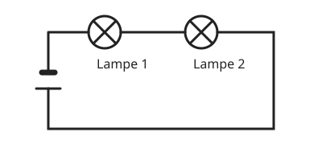

Die Reihenschaltung
Mit einem KI-Tutor lernen
Ein KI-Tutor erklärt dir diese Seite und hilft dir bei den Übungen. Wähl deinen Assistenten:
Mit Claude öffnen Mit ChatGPT öffnen Mit Mistral Vibe öffnen
Du nutzt dein eigenes Konto beim Anbieter. Der Assistent ist kein Angebot von lernapps.net: lernapps liefert nur Inhalte und Übungen. Die Wahl gilt für alle Seiten, nur auf diesem Gerät.
Hintereinander geschaltet
Bei einer Reihenschaltung liegen die Verbraucher hintereinander in einem einzigen Kreis. Der Strom hat nur einen Weg und fließt nacheinander durch alle Bauteile.
- Reihenschaltung
In einer Reihenschaltung sind die Bauteile hintereinander in einem Kreis geschaltet. Es gibt nur einen Weg für den Strom.

Reihenschaltung von zwei Lampen. Der Strom hat nur einen Weg.
Quelle: eigene Zeichnung. Lizenz: CC-BY-4.0.Wenn ein Bauteil ausfällt
Geht eine Lampe kaputt, ist der einzige Weg unterbrochen. Der Stromkreis ist offen, und alle Lampen gehen aus. Das kennst du von alten Lichterketten: Eine kaputte Lampe legt die ganze Kette lahm.
Die Stromstärke bleibt gleich
Weil es nur einen Weg gibt, fließt überall im Kreis dieselbe Stromstärke. Vor der ersten Lampe ist sie nicht größer als hinter der zweiten. Strom wird nicht verbraucht.
Übung
Übung
Lösung
Sie geht auch aus, weil der Stromkreis offen ist. richtige Antwort
Es gibt nur einen Weg. Ist er unterbrochen, fließt nirgends Strom.
Sie leuchtet heller, weil sie jetzt allen Strom bekommt.
Es fließt gar kein Strom mehr, denn der Kreis ist offen.
Sie leuchtet weiter wie vorher.
Das gilt für die Parallelschaltung, nicht für die Reihenschaltung.
In der Reihenschaltung unterbricht ein Ausfall den ganzen Kreis.
Mehr dazu:
Übung
Lösung
Richtige Antwort: 0,3 A
A2 zeigt ebenfalls 0,3 A. Die Lampe verbraucht keinen Strom, in einer Reihenschaltung ist die Stromstärke überall gleich.
Mehr dazu:
Übung
Lösung
Richtige Antwort: Die Aussage stimmt nicht.
In der Reihenschaltung gibt es nur einen Weg. Mehrere Wege gibt es in der Parallelschaltung.
Mehr dazu:
Übung
Lösung
Reihenschaltung richtige Antwort
Der Name sagt es: Die Bauteile stehen in einer Reihe.
Parallelschaltung
Dort gibt es mehrere Zweige nebeneinander.
Messschaltung
Diesen Begriff gibt es hier nicht.
Hintereinander heißt Reihenschaltung.
Mehr dazu: